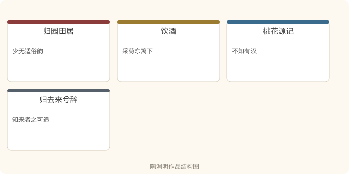

陶渊明诗选
一、基本信息
| 作者 | 陶渊明 |
|---|---|
| 成书/出版 | 诗作于约400—427年间；通行选本百余首 Tao Qian supplementary — Encyclopaedia Britannica（百科全书） |
| 国别/地区 | 中国 |
| 时代 | 古代 · 魏晋 |
| 体裁 | 诗选集 |
| 语言 | 汉语（文言） |

陶渊明作品结构图（主题·结构图）
二、创作背景
Britannica：陶潜为田园诗第一位伟大诗人（the first great poet of tianyuan pastoral poetry——Britannica）；朴素不雕饰的风格生前不受重视、唐代始获推崇（plain, unadorned style was underappreciated in his lifetime but gained recognition during the Tang dynasty——Britannica）。
三、内容脉络
《归园田居》：『少无适俗韵，性本爱丘山』（原文，公有领域）。
《饮酒》：『采菊东篱下，悠然见南山』（原文，公有领域）。
《桃花源记》：『不知有汉，无论魏晋』（原文，公有领域）——乌托邦。
《归去来兮辞》：『悟已往之不谏，知来者之可追』（原文，公有领域）——辞官宣言。
四、主要人物表
| 人物 | 身份 | 说明 |
|---|---|---|
| 五柳先生 | 隐者自况 | 采菊东篱下的隐者形象 |
五、主题与艺术特点
- 平淡美学：Britannica——plain, unadorned style（朴素不雕饰——Britannica）。
- 田园：Britannica——田园诗第一位伟大诗人。
- 思想：以道为主、融合儒佛（Britannica：blended Daoism with selected Confucian and Buddhist elements——Britannica）。
六、影响与评论
- Britannica：田园诗第一位伟大诗人（the first great poet of tianyuan pastoral poetry）。
Tao Qian supplementary — Encyclopaedia Britannica（百科全书） - Britannica：生前不受重视、唐代始获推崇（gained recognition during the Tang dynasty）。
Tao Qian supplementary — Encyclopaedia Britannica（百科全书）
七、阅读建议
难点
- 平淡中见深邃——不可一读即过。
- 《桃花源记》的乌托邦解读。
- 《陶渊明集》（中华书局，通说待核）。
- 《陶渊明诗选》（人民文学出版社，通说待核）。
先读《归园田居》其一与《饮酒》其五 →《桃花源记》《归去来兮辞》→ 通读。
八、待核实
- 生年365与卒年427 Britannica 确认。
- 《桃花源记》原文逐字核对。
- 萧统《陶渊明集序》评语待核。
本页主要来源
陶渊明的其他收录作品：陶渊明诗选